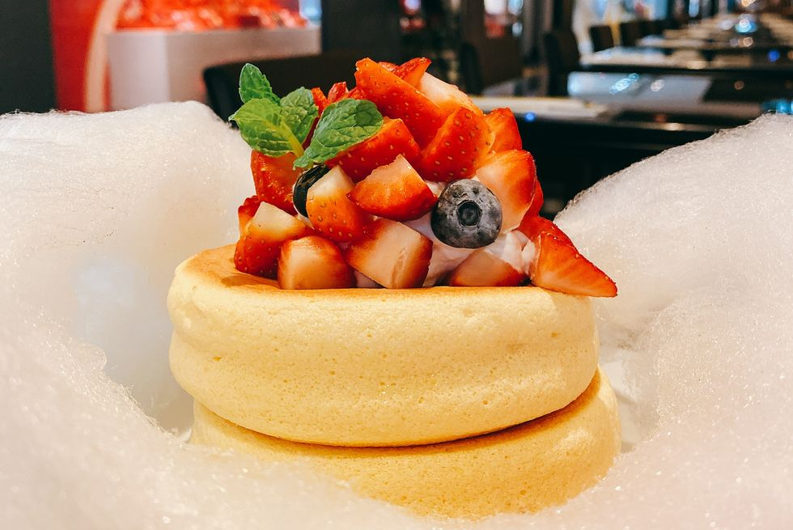

首頁
北海道人氣鬆餅
千層蛋糕
再睡5分鐘
心得感想

北海道人氣鬆餅「椿Tsubaki Salon」台北晶華旗艦店正式開幕！期間限定草莓山、蒙布朗栗子鬆餅必吃
來到台灣掀起一股旋風話題的北海道人氣鬆餅「椿Tsubaki Salon」原先計畫在台北晶華酒店快閃，
由於評價太過熱烈受到無數人的喜愛，原先店點位於地下B2的精品廊道之中的「椿Tsubaki Salon」現在正式的在晶華酒店內開設店舖！
為了慶祝開幕，特別推出了「北海道粉雪厚鬆餅 草莓」期間限定口味，以及濃郁迷人的栗子口味及生火腿鹹點口味，一起來看看。